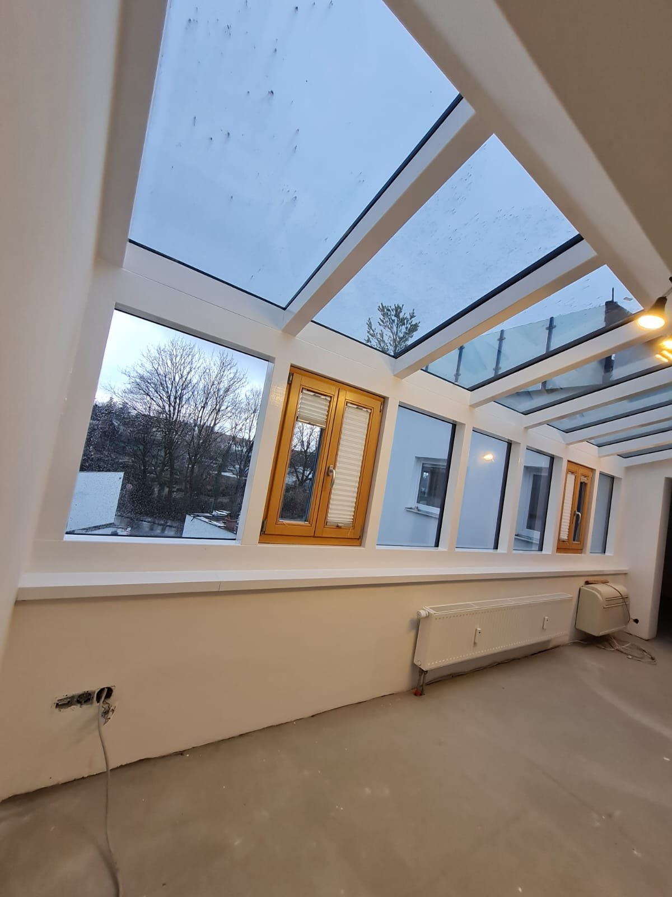

Wohnräume auffrischen
Neue Farben, ein anderer Boden oder überarbeitete Oberflächen: Wir besprechen, welche Veränderungen Ihr Zuhause braucht und was erhalten bleiben soll.
MEL MALER · RENOVIERUNGSARBEITEN
Sie möchten Ihre Wohnung, Ihr Haus oder Ihre Arbeitsräume auffrischen? Wir verbinden die passenden Arbeiten zu einem durchdachten Ablauf – mit einem klaren Blick auf Ihre Wünsche.
Renovierungsarbeiten anfragen ↗
WAS WIR FÜR SIE TUN
Wir stimmen die Arbeiten auf Ihre Räume, Ihre Wünsche und die Gegebenheiten vor Ort ab.
Neue Farben, ein anderer Boden oder überarbeitete Oberflächen: Wir besprechen, welche Veränderungen Ihr Zuhause braucht und was erhalten bleiben soll.
Auch Arbeitsräume profitieren von einer sorgfältigen Renovierung. Zugänglichkeit, Nutzung und mögliche Arbeitszeiten fließen in die Planung ein.
Wenn mehrere Arbeiten zusammenkommen, ist die Reihenfolge entscheidend. Wir stimmen unsere Leistungen und nötige Schnittstellen mit Ihnen ab.
Malerarbeiten, Trockenbau, Tapeten, Lack und Böden: Wir stimmen die Arbeiten aufeinander ab, damit Sie nicht mehrere Betriebe koordinieren müssen.
Ob Sie während der Arbeiten in den Räumen wohnen oder die Wohnung leer steht: Wir planen den Ablauf passend zu Ihrer Situation.
Zum Abschluss sehen wir uns das Ergebnis gemeinsam an. Abdeckungen werden entfernt und die Räume sauber hinterlassen.
INTERAKTIVRENOVIERUNGS-PLANER
Wählen Sie die geplanten Arbeiten. Der Planer sortiert sie in eine sinnvolle Reihenfolge und erklärt, warum.
Allgemeine Empfehlung zur Orientierung. Die genaue Reihenfolge hängt von Ihren Räumen und dem Umfang ab und wird bei der Planung festgelegt.
Ergebnis als Anfrage übernehmen ↗


EIN PROJEKT IN DREI BILDERN
So entsteht aus einem Raum mit Potenzial ein heller Lieblingsplatz. Die Bilder wechseln automatisch – oder Sie wählen selbst.
AUS UNSEREN PROJEKTEN
Renovierungen von MEL – vom ersten Schliff bis zum fertigen Raum.
SO LÄUFT ES AB
Wir sehen uns Ihre Räume an und besprechen, was sich verändern soll.
Umfang, Reihenfolge der Arbeiten und Termine werden abgestimmt.
Die Gewerke greifen ineinander – sauber und geplant.
Wir sehen uns das Ergebnis gemeinsam an.
GUT VORBEREITET
Notieren Sie, welche Räume betroffen sind, was verändert werden soll und welchen Zeitraum Sie im Blick haben. Auch ein grober Budgetrahmen hilft, das Vorhaben sinnvoll zu besprechen.
Den genauen Umfang und die Kosten klären wir nach der Besprechung Ihres Vorhabens. Sie müssen zum ersten Kontakt noch nicht alle Details kennen.
Vorhaben besprechen ↗HÄUFIGE FRAGEN
Ja. Auch einzelne Räume oder ausgewählte Arbeiten können angefragt werden. Entscheidend ist, was Sie konkret verändern möchten.
Das hängt vom Umfang der Arbeiten und den betroffenen Räumen ab. Wir besprechen, ob eine abschnittsweise Ausführung sinnvoll und möglich ist.
Falls sich bei der Ausführung weiterer Bedarf zeigt, besprechen wir die notwendigen Schritte und Auswirkungen auf Kosten und Zeitplan mit Ihnen, bevor zusätzliche Arbeiten vereinbart werden.
Grob gilt: erst staubintensive Arbeiten wie Trockenbau, dann Spachteln, Tapezieren und Streichen, danach Lackarbeiten und zum Schluss der Boden. Der Renovierungs-Planer oben zeigt die Reihenfolge für Ihre Auswahl.
Häufig ja – das hängt vom Umfang ab. Wir besprechen vorab, welche Räume wann frei sein sollten.
DER NÄCHSTE SCHRITT